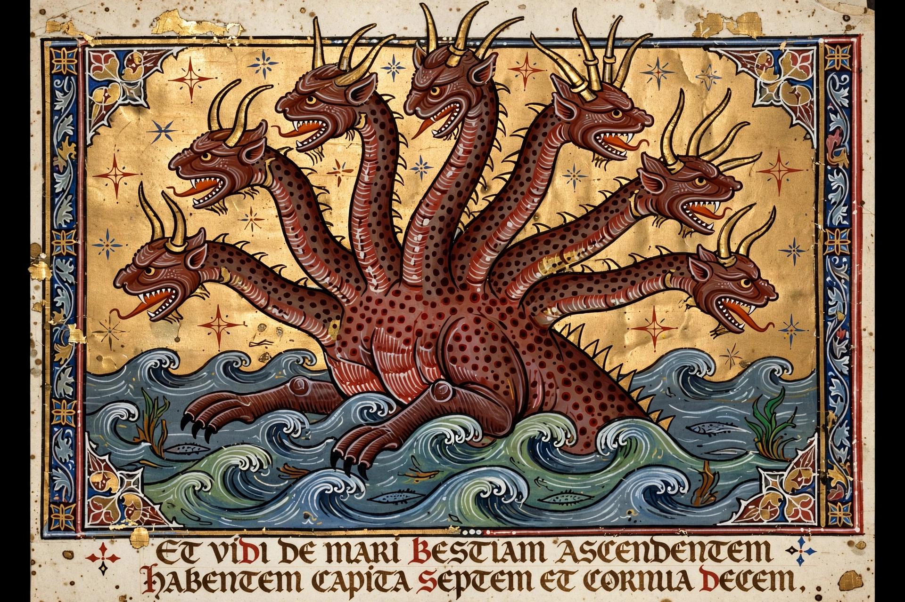

Beast (Revelation)

The Beast (Greek: Thērion) is a figure appearing in the Book of Revelation in the New Testament. Two beasts are described in Revelation 13: the Beast from the Sea, with seven heads and ten horns, which receives power from the Dragon (Satan), and the Beast from the Earth, which enforces its worship and compels people to receive the "mark of the beast."
| Source | Book of Revelation, chapters 11–20 |
|---|---|
| Features | Seven heads, ten horns, blasphemous names |
| Number | 666 (some manuscripts: 616) |
| Ally | The False Prophet (Beast from the Earth) |
Description
The Beast from the Sea resembles a leopard with a lion's mouth and bear's feet, echoing the four beasts of Daniel 7 combined into one. It is worshipped by the world, makes war on the saints for 42 months, and one of its heads bears a seemingly fatal wound that is healed. The Beast from the Earth has two horns like a lamb but speaks like a dragon; it performs signs, animates an image of the first Beast, and causes all people to receive a mark on the right hand or forehead, without which no one may buy or sell.
The number of the Beast
Revelation 13:18 gives the number of the Beast as 666, described as "the number of a man." Some early manuscripts read 616. Using gematria, many scholars identify the figure with the emperor Nero: "Neron Caesar" transliterated into Hebrew yields 666, and the Latinised form yields 616. Preterist interpreters accordingly read the Beast as imperial Rome and its persecuting emperors, while futurist interpreters identify it with an end-times Antichrist figure, and historicist interpreters (including many Reformers) with the papacy.
Fate
In Revelation 19–20 the Beast and the False Prophet are captured and thrown alive into the lake of fire after the battle of Armageddon, and the Dragon is bound for a thousand years before sharing their end.